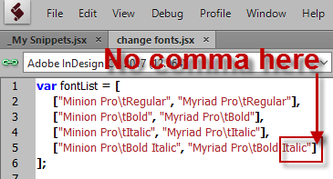
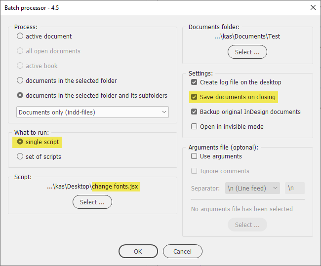

Change fonts script for batch processor
Version with find-change list taken directly from the CSV file
Version with find-change list taken directly from the Excel (XLSX-file)
This script is for Windows only: the code is partially written in VBScript.
Here is the latest version of the script and here are the sample files used in the example below.
Change fonts script with find-change list hardcoded into the script
Here is the script together with 'before and after' sample files (ver. CC 2017).
At the very beginning you'll see the first variable which is the array of arrays containing the names of the fonts in the format:
[ "Find this", "Change to this" ],
Here I used the fonts installed with InDesign to make sure that everybody have them and can test the script using my sample.

- The left element is 'Find this', the right one is 'Change to'.
- The family name and font style should be separated by a tab: either \t or by actual tab (by hitting tab on the keyboard)
- The find-change pairs (the elements of array) are separated by commas so make sure that you won't leave a comma after the last element (see the screenshot above).
Then you can select the script in the Batch processor like so:

Important note
In my practice, I encountered a problem when replacing fonts with a script in old (converted) documents: the fonts failed to change for some reason. The solution was simple: export files to IDML and back to INDD format. That’s why I added support for IDML files in my Batch processor script's new version — 5.
If you have any feedback — complaints, comments, or suggestions — feel free to send me an e-mail putting Change fonts script into the subject line. (Warning: unfortunately, I can´t reply to all the e-mails I get because of lack of time. Sorry in advance!)
If you found these scripts useful and want me to develop them further, consider supporting me by donating via PayPal directly to my e-mail: askoldich [at] yahoo [dot] com. (Due to PayPal´s restrictions for Ukraine, I can´t have a Donate button on my site.)
See also:
- Change fonts CSV — a script that can be used as a regular script against the current document, or you can run it from the batch processor.
- Find/change missing font with scripting by Marijan Tompa (tomaxxi)
- Script for changing missing fonts inside styles by Marc Autret
Back to the main Batch processor page or Scripts for batch processor